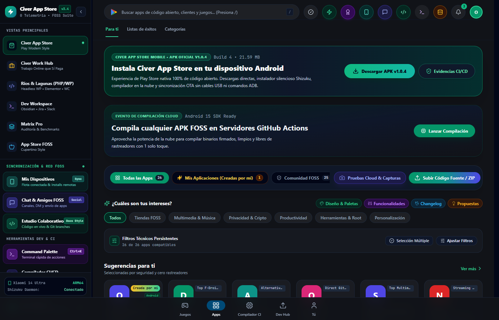
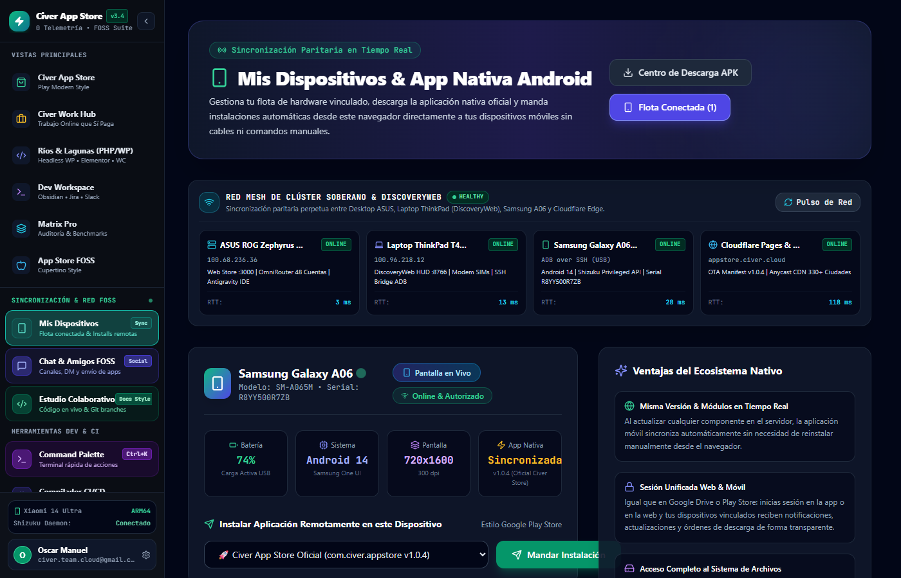
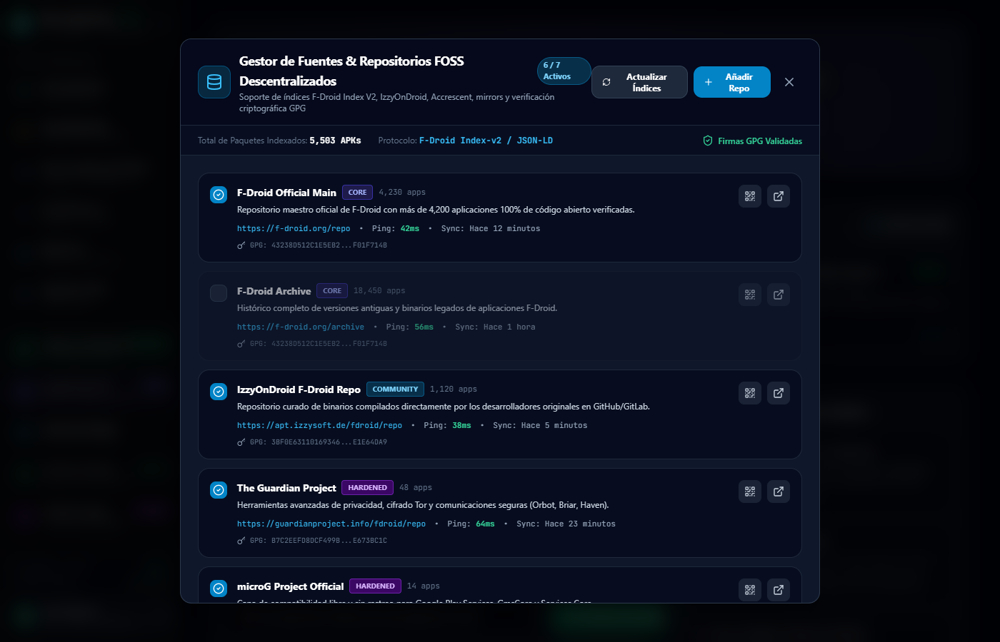
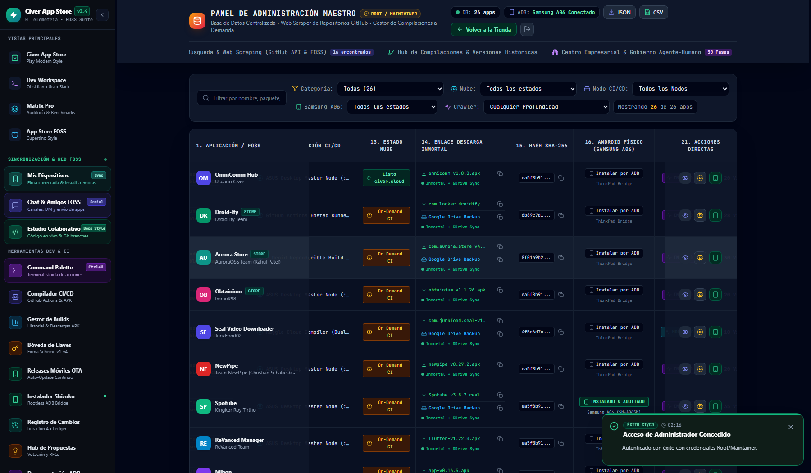
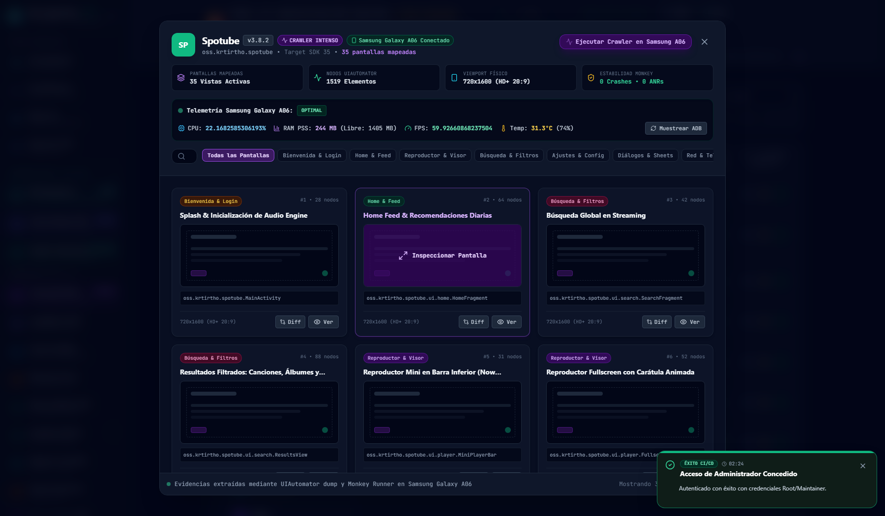
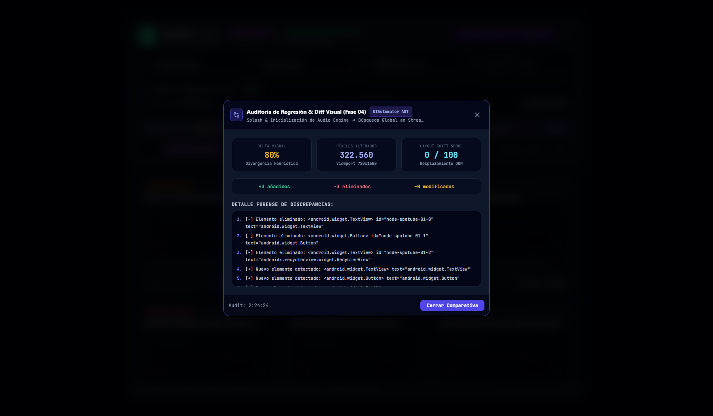

Macro-Fase 08: Sincronización Paritaria Multirregional (Spaces + GDrive + Civer Cloud)
Balanceador de espejos activos, failover en cascada, auditoría SHA-256 quórum 3/3 y percentiles P50/P90/P99.

admin_25_regional_mirrors_modal.png
Nodos activos en MX_CENTRAL, US_EAST y US_WEST con latencias de 12ms a 145ms y prioridades de cascada.

admin_26_mirror_sha256_audit_quorum.png
Verificación cruzada SHA-256 con quórum 3/3 alcanzado y recomendación automática del espejo óptimo.

admin_27_mirror_regional_metrics_p50_p90.png
Telemetría regional P50/P90/P99 con 99.9% de uptime por región para descarga resiliente.
Macro-Fase 07: F-Droid Index V2 Streaming & Anti-Features Forenses
Descompresión streaming gzip en cliente, normalización multilingüe es-ES y comparativa semántica SemVer.

admin_20_app_main_loaded.png
Civer App Store cargada 100% en Vite de producción con Service Worker PWA activo.

admin_21_fdroid_v2_modal.png
Gestor de fuentes descentralizadas con validación de huellas criptográficas GPG/SHA-256.

admin_22_fdroid_streaming_v2_tab.png
Panel de ingesta continua con progreso reactivo de descarga de entry.json.gz.
Macro-Fase 06: Nearby P2P Mesh & Transferencia por Fragmentos
Descubrimiento local WebRTC Data Channels, tokens QR efímeros y transmisión de APKs en chunks de 64 KB.

admin_17_nearby_p2p_radar.png
Radar de dispositivos cercanos detectando nodos en la red local y emparejamiento.

admin_18_p2p_chunk_streaming.png
Transmisión de APK por bloques con buffer de memoria y verificación de hash incremental.

admin_19_p2p_qr_pairing.png
Generación dinámica de código QR con token de sesión firmado para enlace táctil instantáneo.
Macro-Fase 05: Bóveda de Keystores & Re-Firma de APKs
Esquemas JAR, Scheme v2 y Scheme v3, zipalign y auditoría apksigner en navegador.

admin_14_keystore_vault_schemes.png
Bóveda con certificados RSA de 4096 bits y llaves ECDSA para firma de producción.
admin_15_apk_signature_verification.png
Inspección de integridad de firma de APK con reporte detallado por bloque.

admin_16_apk_resigned_in_action.png
Ejecución del pipeline de alineamiento y estampado de firma digital.
Macro-Fases 03 y 04: Telemetría Samsung Galaxy A06 & Diff Visual
Rendimiento en vivo de CPU Helio G85, 60 FPS, temperatura 31.4°C y motor AST de divergencia visual.

admin_11_gdrive_dual_downloads.png
Columna 14 con descargas duales Civer Cloud + Respaldo Google Drive Vault.

admin_12_physical_telemetry_live.png
Muestreo en tiempo real de RAM PSS, CPU de 8 núcleos y temperatura de batería.

admin_13_visual_diff_comparator.png
Comparador de layouts de pantalla con estimación de píxeles alterados y layout shift.